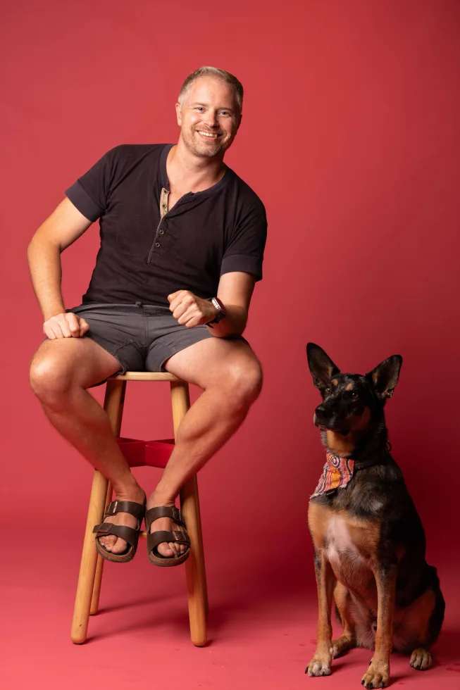
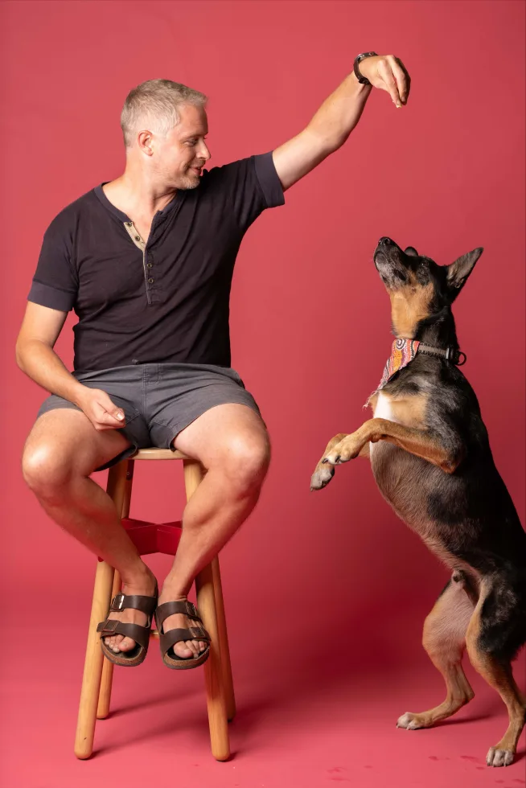
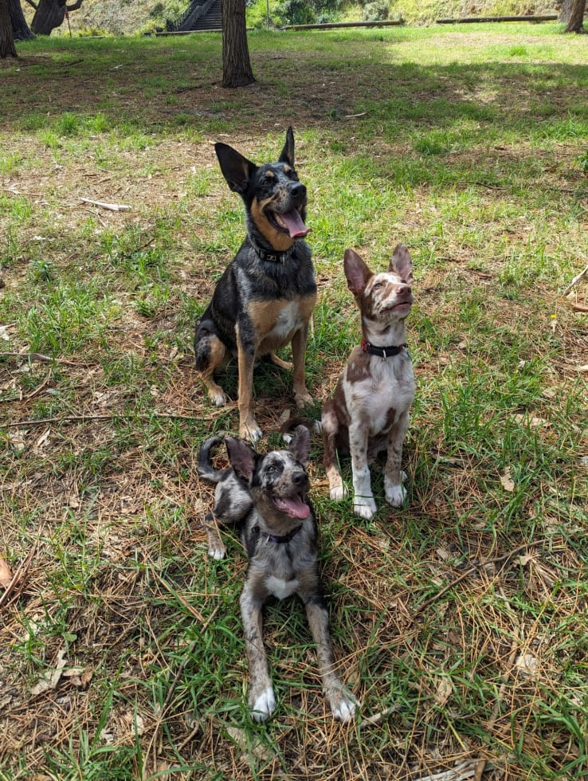
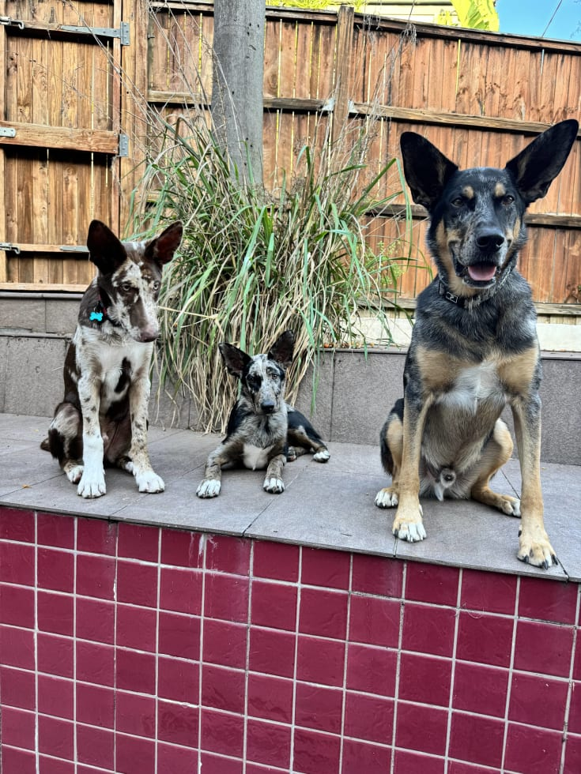

Pulling on the lead
Build clearer, calmer walks that are easier for both ends of the lead.
House-visit dog training · Morisset & surrounds
Practical, one-to-one support for pulling, barking, overexcitement, household challenges and lower-level reactivity—built around your dog, your home and your daily routine.

Based in Bonnells Bay
Visiting Morisset and surrounding areas
Where we can start
When a problem keeps happening, it helps to look at the whole picture: your dog's history, home environment, daily routines and the way you respond to each other.
Build clearer, calmer walks that are easier for both ends of the lead.
Look beyond the noise to the routines and triggers that keep it going.
Help your dog settle, think and respond when energy starts to climb.
Create practical routines that everyone in the home can follow.
Support your dog with calm, consistent changes to everyday life.
Understand what sets your dog off and build more manageable responses.
Not sure whether your dog's needs are within my scope? Contact me through Mad Paws before booking. I will be upfront if a certified or veterinary behaviour specialist is the safer next step.
Ask James on Mad Paws
A whole-picture approach
Difficult behaviour is rarely solved by teaching another command. I help owners identify the routines, reactions and mixed messages that may be maintaining the problem, then develop practical changes that work in everyday life.
See the dog in the environment where everyday behaviour actually happens.
Choose changes the household can understand and apply consistently.
Recommend specialist support when the dog's needs or safety risks call for it.
How it works
Share your dog's history, living situation, the behaviour you are seeing and what you would like to change through Mad Paws.
I observe your dog in their everyday environment and look for routines or interactions that may be contributing.
We use the one-hour visit to begin realistic steps that your household can apply consistently.
Straightforward pricing
Every session is a house visit, so we can work with your dog in the environment where the challenge occurs. Current availability, booking and payment are handled through Mad Paws.


One-hour house visit
From $112
Travel: add $15 when travel time from Bonnells Bay exceeds 30 minutes.
Check availability on Mad PawsMeet James
I have spent the past ten years training my own dogs and helping friends and local owners with theirs. I share my life with two German Shepherd–Koolie crosses, Merlin and Nimue, whom local dog owners may have seen out and about with me.
My experience includes working with dogs presenting serious behavioural and safety challenges, as well as helping owners who feel stuck with everyday problems at home or on walks. My approach is practical: understand what is keeping the problem going, then make changes that can work in real life.
A clear note about my experience
I am a self-taught trainer, not a certified dog behaviourist or veterinary
behaviourist. I am transparent about the limits of my experience and will
recommend specialist support where a dog's needs or safety risks fall outside
my scope.
Good to know
Still unsure? Send James a message through Mad Paws before booking.
Leash pulling, excessive barking, overexcitement, household boundaries, mild anxiety and lower-level reactive behaviour. Every dog is different, so message me first if you are unsure whether the problem is within scope.
I am happy to consider dogs of any breed or size. The dog's history, behaviour and any safety risks will determine whether I am the right person to help.
All sessions are one-hour house visits. I come to you so we can see the dog in their everyday environment. I do not offer sessions at my home.
Please share the behaviour you are seeing, what you would like to achieve, your dog's living situation and sleeping arrangements, other pets in the home, and relevant history such as age and adoption background.
A $15 travel surcharge applies when the journey from Bonnells Bay to your home takes more than 30 minutes.
Current availability, booking and payment are handled through Mad Paws. Use any booking button on this site to open James's profile.
Ready to make a start?
You do not need to have the problem neatly diagnosed. Share what is happening and what you would like to improve, then arrange a one-hour visit through Mad Paws.